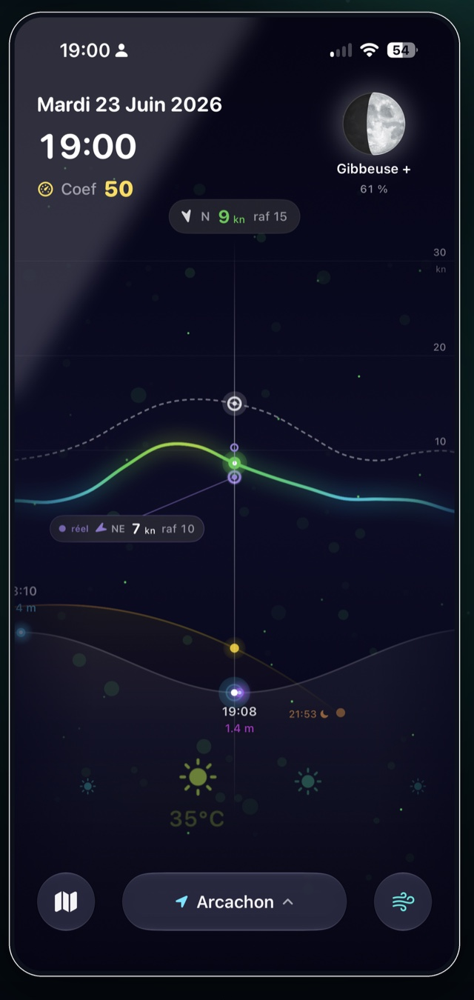
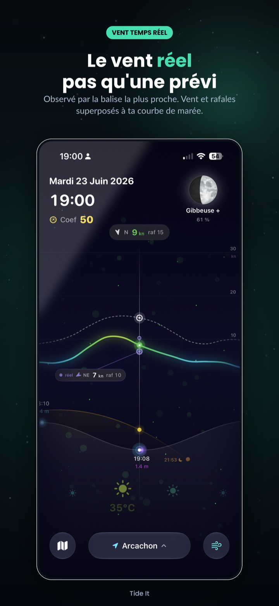
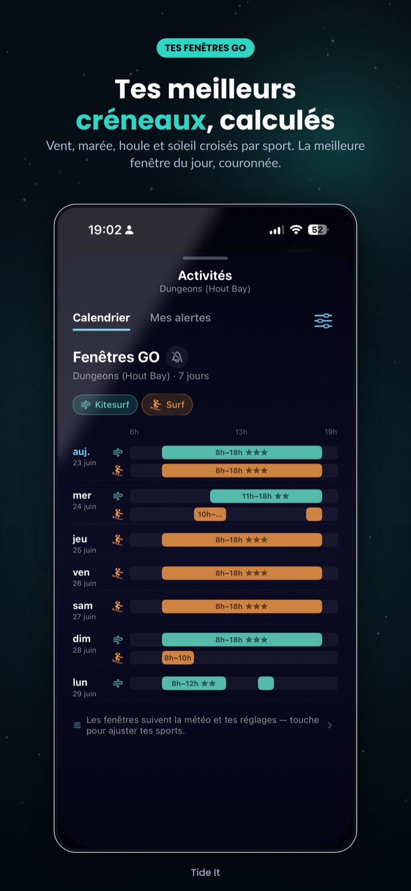
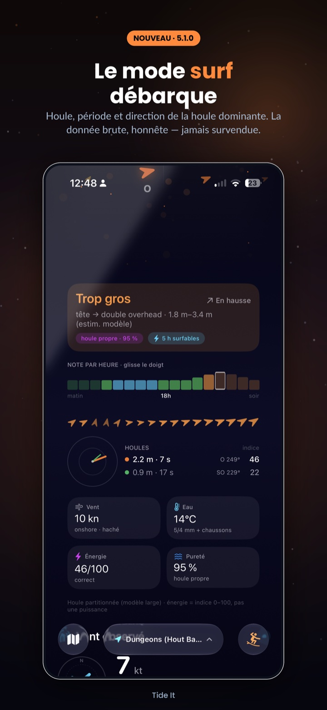
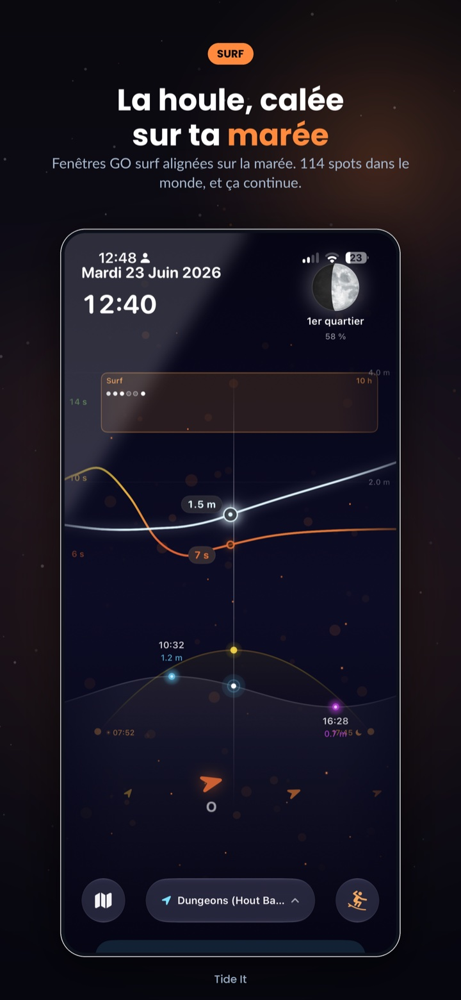
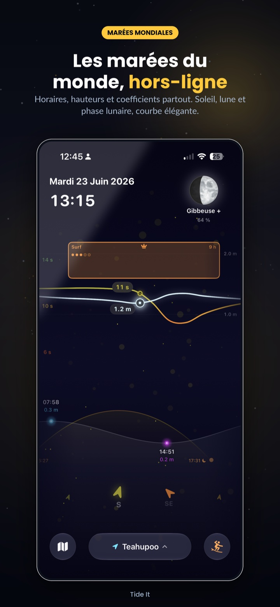
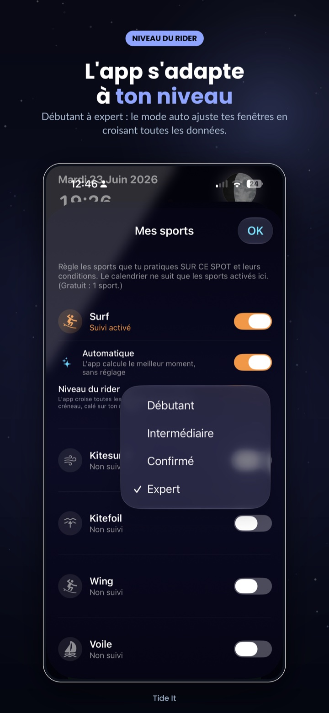
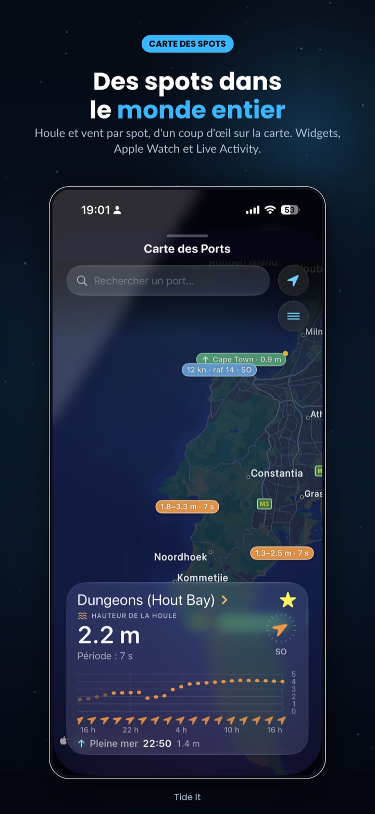

Vent réel, pas qu'une prévi
La balise la plus proche de ton spot : vitesse, rafales, direction, fraîcheur de la mesure — et l'écart vs la prévision, affiché sans détour.
Tide It croise la marée, le vent mesuré par la balise la plus proche et la houle pour te dire quand aller à l'eau. Kitesurf, wingfoil, voile, surf.

Le vent a désormais un verdict mesuré :
Laminaire Irrégulier Rafaleux— et il pèse sur tes fenêtres GO.
Pas d'onglets à croiser, pas de calculs de tête : la courbe fusionne ce que tu vérifiais dans quatre apps.
La balise la plus proche de ton spot : vitesse, rafales, direction, fraîcheur de la mesure — et l'écart vs la prévision, affiché sans détour.
Vent, marée, houle et soleil croisés selon TES réglages et ton niveau. 7 jours de créneaux, notés 1 à 5 étoiles.
Laminaire, irrégulier ou rafaleux : le ratio rafales/vent moyen de la balise, mesuré — jamais deviné. Un vent haché note moins, comme sur l'eau.
Houle dominante, période, énergie, pureté et intervalle de déferlement. 284 spots dans 64 pays — et ta marée dessous.
Horaires, hauteurs, coefficients — calculés sur l'appareil par analyse harmonique. Disponible hors-ligne, partout.
La prochaine marée sur ton écran verrouillé, ton poignet et ta Dynamic Island — pensé pour ne pas vider ta batterie.
Beaucoup d'apps lissent, interpolent et remplissent les trous. Tide It fait l'inverse : ce qui n'est pas mesuré n'est pas affiché.







← Fais défiler →
Tide It affiche deux vents distincts : la prévision des modèles météo, et le vent réellement mesuré par la balise anémomètre la plus proche de ton spot — vitesse, rafales, direction et âge de la mesure. Les deux ne sont jamais mélangés sans le dire. L'attribution détaillée des réseaux de mesure est disponible dans l'app (Réglages ▸ À propos).
Un créneau où les conditions correspondent à ton sport et ton niveau : vent dans ta plage, hauteur d'eau suffisante, direction sûre, houle et régularité du vent prises en compte. Calculées sur 7 jours, notées 1 à 5 étoiles.
Oui. Les marées sont calculées sur l'appareil et restent disponibles hors-ligne. Seuls le vent, la météo et la houle demandent une connexion.
Tide It couvre 3 500+ ports et 284 spots de surf dans 64 pays. S'il manque le tien, crée un spot personnalisé à ta position exacte — il aura sa marée, son vent et ses fenêtres GO.
Aucun des trois. Pas de pub, pas de SDK publicitaire, pas d'analytique tierce, pas de compte à créer. Tes réglages restent sur ton appareil (et ton iCloud personnel pour la synchro).
À l'installation, Premium est activé gratuitement pendant 1 mois, sans engagement et sans saisir de moyen de paiement. À la fin, l'app repasse automatiquement en version gratuite — rien à annuler.
Non. Tide It est un outil d'aide à la décision pour les loisirs nautiques. Pour la navigation, référez-vous aux documents et bulletins officiels des autorités maritimes.
Gratuit sur iPhone et Apple Watch. Premier mois Premium offert.
Télécharger dansl'App Store